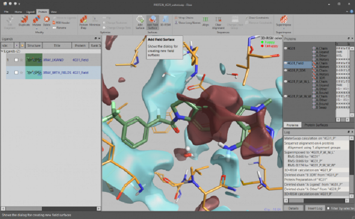
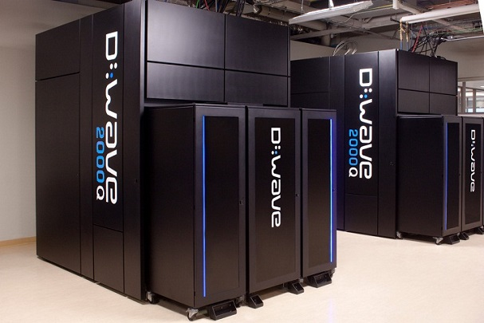

Embedding Quantum Simulator Screenshots
Time traversal and charge conjugation in embedding EQS


See all the research and every nitty-gritties of our research facility. It's all free and open.
Pay for what you need only.
Relieve maintenance charges & headache. It's all done by us for free.
We don't share your data unless you license it for CreativeCommons
We present a three-dimensional cubic lattice spin model, anisotropic in the z^ direction, that exhibits fracton topological order. The latter is a novel type of topological order characterized by the presence of immobile pointlike excitations, named fractons, residing at the corners of an operator with two-dimensional support.
Read MoreTwo-particle angular correlations are studied in pp collisions at s√=13TeV, collected with the LHCb detector at the LHC. The LHCb detector provides measurement in the very forward region, 2<η<5. This region is complementary to other experiments and allows to explore low Bjorken-x region. The correlations are studied as a function of difference in pseudorapidity (∆η) and azimuthal angle (∆φ) in several pT and activity classes.
Read MoreCoarse-grained models can be of great help to address the problem of structure prediction in nucleic acids. On one hand they can make the prediction more efficient, while on the other hand, they can also help to identify the essential degrees of freedom and interactions for the description of a number of structures.
Read MoreMohali Center
Bengaluru Center
Delhi Center